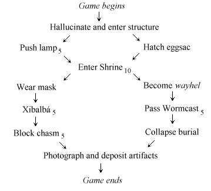

Games from all of the major design houses of the 1980s share a common structure, partly because they were planned as if they were Hollywood films, which even today retain the shape of a three-act play from nineteenth-century theatre. Designers would begin by making a formal pitch, writing two or three-page synopses of the action, and serious coding did not begin until such a synopsis had been talked through. Structural breakdowns of what they produced are often revealing.
· · · · ·
Size and density. There was a time when the sole measure of quality in advertisements for cheaper adventure games was the number of rooms. Level 9's most original work, ‘Snowball’, claimed to have over 7,000 locations, of which 6,800 made up an unusually wearisome maze. Even a 200-room game meant only minimal room descriptions and simple puzzles, scattered thinly over the map. Whereas ten of the Infocom games have fewer than sixty rooms, with ‘Seastalker’ (30 rooms), ‘The Witness’ (30) and ‘The Hitchhiker's Guide To The Galaxy’ (31) the most geographically concise. Today's custom is that, barring a few junctions and corridors, there should be something interactive in every room.
Today's design systems impose few restrictions on game size or construction, but designers still have an unconscious idea of a “budget” for a game design, if only to keep its proportions in balance. A typical medium-to-large game contains 250 objects, counting items, rooms and other sundries (the player, the compass directions) as objects. Many items are not portable but are instead walls, tapestries, thrones, control panels, coal-grinding machines and, as a rule of thumb, three items to one room is about right. We might therefore expect 60 rooms, and the next step in budgeting would be to share these out among game regions. The 180 or so items might divide as 50 portable items and 130 furnishings. (‘Wishbringer’: 250 objects, 52 rooms, 34 takeable items.) As for the text, ‘Enchanter’ contains 20,100 words, ‘Trinity’ 32,200 and ‘Curses’ 44,000, but the latter are large games and 25,000 words is more typical: around a quarter of the length of a typical novel, for an average of only 400 words per location. The size of the source code varies dramatically with the design system, but for instance: ‘Spellbreaker’ 17,800 lines, ‘Christminster’ 13,000, ‘Once and Future’ (Gerry Kevin Wilson, 1998) 35,000.
Limitations can be a blessing in disguise, because they force a designer to keep asking if this part or that part is altogether necessary. Here is Brian Moriarty, whose research went as far as looking up geological surveys:
The first thing I did was sit down and make a map of the Trinity site. It was changed about 50 times trying to simplify it and get it down from over 100 rooms to the 40 or so rooms that now comprise it. It was a lot more accurate and very detailed, but a lot of that detail was totally useless.
This reduction to 40 rooms would have been worthwhile even if memory and disc space had been unlimited. Redundant locations can be an indication of too much prose and too little interaction. ‘The Light: Shelby's Addendum’ (C. A. McCarthy, 1995) contains much that is praiseworthy but its reviewers took a dim view of its having over twenty locations in which nothing happens.
▲ It is not always realised how technical constraints have influenced the literary style of the classic games, and so of what we consider to be good today. Infocom's writers were mostly working under an absolute ceiling of 255 objects (including rooms) and memory was more pressing still. Lebling summarised the implementor's frustration en passant in a 1987 memo: “I made a pitch for a more-unlimited game system… Brian [Moriarty] is already running out of table space in his game, Amy [Briggs]'s game is too big and not even in Beta yet, all our EZIP games have had to be cut, and ‘Bureaucracy’ [Douglas Adams, 1987] had to become EZIP instead of LZIP.” (We would now call both EZIP and LZIP version 4 of the Z-machine, but LZIP games were small enough to run on a Commodore 64 – the biggest source of sales – and EZIPs weren't.) Lebling lamented in 1998 that “a lot of lovely shivers” had to be cut out of his almost-finished ‘The Lurking Horror’ as a result: whereas in spite of the amount of her game (‘Plundered Hearts’) that ended on the cutting-room floor, Amy Briggs felt that “The constraints of running on the Commodore 64 helped the games be richer, I believe, than if we had been writing then for the Pentium Pro” (XYZZYnews 12). Similarly, Scott Adams's games, running on smaller computers with tape decks instead of disc drives, were obliged to show extreme economy with objects and textual messages, but coded rules and what we would now call daemons so efficiently that these few objects ended up tightly interlinked, with side effects and multiple uses.
· · · · ·
The prologue. Most games divide into three phases: prologue, middle game and end game. These phases are often closed off from each other, so that once a phase has ended it cannot be returned to, though the prologue sometimes offers premonitions of the end, or conversely the end game echoes back to the prologue. Like the children in C. S. Lewis's tales of Narnia, the player is always going “further up, and further in”. Stu Galley, in debugging the mystery ‘The Witness’, found himself obliged to enforce the plotting of the passage between prologue and middle game:
[The play-testers] discovered significant “branches” in the story that I had overlooked. For example, what if the player sneaks into the house or doesn't go in at all until too late? The first possibility raised too many complications, so we decided to lock all the outside doors.
The duties of the prologue are to establish an atmosphere, to foreshadow what is to come and give out a little background information, while giving the player enough entertainment to want to continue. The interactive aspect of this is that the player has to pick up the game's special skills, using commands, tools or actions special to the setting. (The prologue to ‘The Meteor, The Stone and a Long Glass of Sherbet’ (Angela M. Horns, 1997) uses an easy puzzle involving a telescope and a guide book to provide practice with them.)
The task of passing into the middle game should be reasonably straightforward, but at the same time involved enough that the player has a feeling that time spent on the game is time rewarded. The designer would be wise to imagine that the player of the prologue is really only toying with the game at this stage, and isn't drawing a map or being at all careful. If the prologue is too big, the player will quickly get lost and give up. If it is too hard, then many players simply won't reach the middle game.
▲ The passage from the prologue to the middle game is often also the passage from the mundane to the fantastical, so that the prologue answers the question “How did I get into all this?” The prologue of ‘Advent’ is an above-ground landscape, whose presence lends a much greater sense of claustrophobia and depth to the underground bulk of the game. On the other hand, a few games drop the player right in at the deep end, as in ‘Plundered Hearts’, which opens to a sea battle in full swing.
▲ Notable prologues include the streets and meadows outside the apparently impenetrable ‘Christminster’ college (4 locations), the undemolished planet Earth of ‘The Hitchhiker's Guide To The Galaxy’ (6) or 221B Baker Street in ‘Sherlock’ (again, 6), but some have been as large as the guild house of ‘Sorcerer’ (Steve Meretzky, 1984), at 13 locations, or the seaport of ‘Crobe’ (Jonathan Partington, 1986), at 18. ‘Advent’ in its classical form had an 8-location prologue, but some extensions (such as Level 9's) fleshed out the above-ground substantially, making the volcano visible as a precursor to its underground discovery late in the middle game.
· · · · ·
The middle game. The middle game is the one which least needs detailed planning in advance, because it is the one which comes nearest to being a miscellaneous collection of puzzles. On the other hand, since it is also the largest part it is the most in need of some rough subdivision into segments. Working through these segments, one by one, provides a sequence of problems and rewards for the player. A first-draft design of the middle game may just consist of a rough sketch of these segments, with some general ideas for objects, places and characters. Slotting actual puzzles in can come later in a more improvisatory, freewheeling sort of way.
The obvious way to subdivide is to carve up the map, perhaps with a pattern to the regions, perhaps even sharing regions out to different authors (as in the AGT game, ‘Shades of Gray’, 1993). Regions correspond perhaps to time zones, to the four winds or the twelve signs of the Zodiac, or else are delineated from each other through simple geography: cave games are especially prone to this, often having a node-like room with exits in all eight cardinal directions. Thus ‘Zork II’ (Marc Blank and Dave Lebling, 1981) has seven areas arranged at compass points around the Carousel Room, with the area northeast serving as prologue. Sometimes the same locale occurs more than once, revisited with a different perspective. The innovative ‘Spider and Web’ (Andrew Plotkin, 1998), in which a player is being interrogated about what really happened when a secret installation was broken into, features repeated but varying hypothetical versions set in the same locations.
Other designers structure the game around performances: in ‘Ballyhoo’ the player enacts the full repertoire of circus skills, and in a region of ‘The Quest for the Sangraal’ all seven deadly sins must be committed. More often, though, dramatic actions are intended to become the turning points in a story. Gareth Rees (in XYZZYnews 6):
In ‘Christminster’, I identified a set of key scenes each of which was an event or experience that affected the player character, and moved the story forwards towards the conclusion, and yet could plausibly be implemented as a section of an adventure game.
In chronological terms, the plot literally moved forwards: the clock, in ‘Christminster’, chimes the half-hour when a key event takes place, advancing towards dinner in hall, but time hangs heavy in an endless Cambridge afternoon while the player is stuck. Puzzles were slotted in later, often around the needs of the plot. One of the game's most enjoyable sequences, with the player exploring a pitch-dark secret tunnel in the company of Professor Wilderspin, in fact exists only to oblige the player to spend time in the Professor's company so that he can do a good deal of talking. Like most traditional interactive fiction, ‘Christminster’ has a plot with little overall variation except for the order in which the player does things. But some radical designers see events not as milestones but forks in the plot. Thomas M. Disch:
… any computer-interactive text deconstructs itself as you write because it's always stopping and starting and branching off this way and that … With ‘Amnesia’, I found myself working with a form that allowed me to display these erasures, these unfollowed paths.
There are games, though, in which an entirely improvised middle game is compensated for by a tautly controlled prologue and end game. Andrew Plotkin (in XYZZYnews 14):
Since ‘So Far’ [1996] is pretty much pure surrealism, I didn't have a plot in mind originally. I had a theme, and was co-inventing puzzles and scenes and events all at the same time.
This sounds potentially shambolic, but in an interview (XYZZYnews 13) in the immediate aftermath of testing ‘So Far’, Michael Kinyon found it enormously affecting. Steve Meretzky:
Sometimes you have only a sketchy outline and are just beginning to coalesce the geography. Sometimes the geography coalesces around the puzzles. Sometimes it's both together.
Geography coalescing around puzzles is evident in Meretzky's work, in which events often spread across multiple locations, as in the case of the ‘Sorcerer’ flume ride.
▲ The middle game is likely to have the largest area of playable map that the player will face. In laying this out, it adds to the interest to make connections in the half-cardinal compass directions – northeast, northwest, southeast, southwest – and to steer away from a feeling that the game has a square grid. (One of the few defects of the ‘Trinity’ middle game, though possibly that was the price to be paid for one of its better puzzles.) Equally, a few, possibly long, loops which can be walked around reduce retracing of steps and avoid the appearance of a bus service map in which half a dozen lines have only one exchange.
▲ The passage from middle game to end game often takes the form of a scavenger hunt: throughout the middle game a number of well-hidden objects are collected and only when they are combined can the end game be entered. See ‘Lords of Time’ (Sue Gazzard, 1983) or indeed almost any game produced in the wake of ‘Advent’, as it was almost taken for granted that any game must have “treasures”. Soon enough it became a cliché, and one which games like ‘Leather Goddesses of Phobos’ or ‘Hollywood Hijinx’ (“Hollywood” Dave Anderson and Liz Cyr-Jones, 1986) send up, but it's still not a bad idea, because it enables many different problems to be open at once. You can be stuck finding sprocket 2 and go and work on finding sprocket 5 for a while instead.
· · · · ·
End game. End games serve two purposes. First, they give the player a sense of being near to success (they used to be called the “Master Game”), and can be used to culminate the plot, to reveal the game's secrets. They also serve to stop the final stage of the game from being too hard to play, narrowing it to only a few accessible rooms or objects. In cave games like ‘Zork’, the final puzzle would be made exceptionally difficult but today's designers usually prefer to give the player the satisfaction of finishing, and themselves the satisfaction of knowing that their story has been completed.
A mark of the last pieces of the puzzle falling into place is that loose ends are tied neatly up and the characters sent away with their fates worked out and futures settled. Looking back, from the point of view of a winning player, can you understand what has happened and why? Can you also see what is to happen to the protagonist next?
The final message is another important one and, as with the overture, the coda is all the better for being brief. To quote examples would only spoil their games. A popular device is to make the two scenes which open and close the story “book-ends” for each other, symmetrical and matching.
▲ To speak of “the” final message or “the” last step is a little presumptive. Multiple outcomes are not to every designer's taste, but Daniel Ravipinto's ‘Tapestry’ (1996), with its sense of tragedy, and its misleading portents and advice, drew much of its strength from an open end. (Its plot owes much to the 1993 Star Trek: The Next Generation episode of the same name.)
▲ Gerry Kevin Wilson suggests that the end game should feature “your Big Nasty™. The Big Nasty™ is the final challenge, be it monster, man, maze, or whatever. This is where you want to ham up your writing and get a sense of urgency going. There needs to be a time limit…” In this view, which is not universally shared, the end game is like a video game's “Boss Level”.
▲ Like prologues, end games vary in size: from a one or two location single closing scene (‘The Lurking Horror’, ‘Sorcerer’) to a new game region (the Dungeon Master's lair in ‘Zork III’ (Marc Blank and Dave Lebling, 1982), 7 locations, or Roman Britain in ‘Curses’, 16).
· · · · ·
Games in the style of ‘Advent’ are very wide, with around thirty or so puzzles, all easily available and soluble in any order. Others, such as the Melbourne House adaptation of Tolkien (‘Lord of the Rings Game One’ (later a.k.a. ‘The Fellowship of the Ring’), ‘Shadows of Mordor’, ‘The Crack of Doom’, Philip Mitchell, 1985, 1987, 1989), are very narrow: a long sequence of puzzles, each of which leads only to a chance to solve the next. Wide games are dull, since no problem solved will lead to any radical change. Narrow games are difficult to pitch: if the one puzzle open at a time is easy then play is too rapid, but if it is hard then the player will be abruptly slammed into a wall of frustration.
Towards the end of design it can be helpful to draw out a lattice diagram of the puzzles. At the top is a node representing the start of the game, and then lower nodes represent solved puzzles. An arrow is drawn between two puzzles if one has to be solved before the other can be. Here is the lattice diagram for ‘Ruins’, with subscripted numbers showing the points scored on reaching each given position: each of the artifacts is worth 5 except the jade mask, worth 10. [description]

This diagram is useful for three reasons. Firstly, it checks that the game is soluble at all: for example, if the jade mask had been kept in Xibalbá, there would be no solution. Secondly, it shows how much of the game happens in different areas. Most usefully of all, the diagram shows whether the game is wide or narrow and which puzzles are likely to be bottlenecks, with large parts of the game depending on their solution. This tall, spindly diagram is indicative of a fairly linear plot, not surprisingly as the game is so small. The problem of entering the Shrine is evidently a bottleneck.
▲ A long arrow on a lattice diagram is a caution that some action very early in play is essential even though it has no effect until some other action much later on. If the early action becomes impossible later, for instance because it is in a prologue which cannot be returned to, the player will legitimately feel aggrieved. In ‘Christminster’, “getting invited to dinner” is theoretically an early puzzle because access to the Master's lodgings occurs at the outset of the middle game, but the puzzle never goes away and remains accessible right up to dinner time.
•
REFERENCES
C. E. Forman exhibits the lattice diagram for ‘Enchanter’,
which clearly shows its prologue, middle game, end game structure, in
XYZZYnews 4. Replying in issue 6, Gareth Rees argues that game
analysis is an aid to, rather than an integral part of, game design.